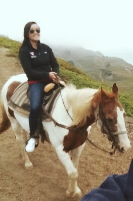

About Me
Gina is a Michigander, current bay area resident, and aspiring full-stack software engineer. Her work experience in technology has been in the capacity of executive level sales. She has sourced new business and signed deals for both a large tech company (LinkedIn) and an AI cyber defense startup (Darktrace).
Gina attended Harvard University to study Government and East Asian Studies, where she led 3 student organizations and earned accolades such as John Harvard Scholar (top 5% of class), Franklin Delano Roosevelt Global Fellow, and Rhodes Scholarship Finalist. She graduated in 2015 with high honors and membership in Phi Beta Kappa.
Gina’s interests include running, traveling, and politics. In 2017, she completed the San Francisco Marathon alongside her fiancée Dan.